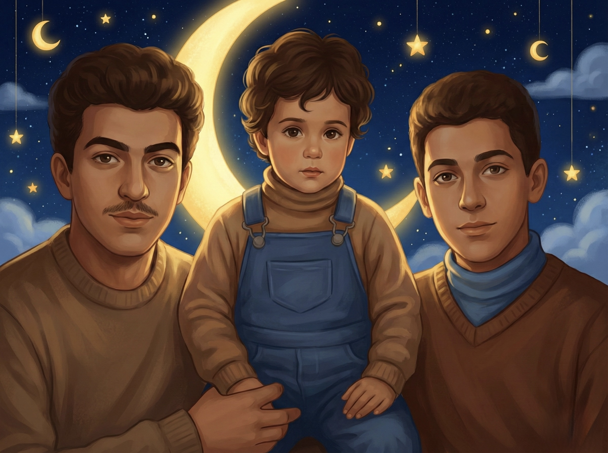
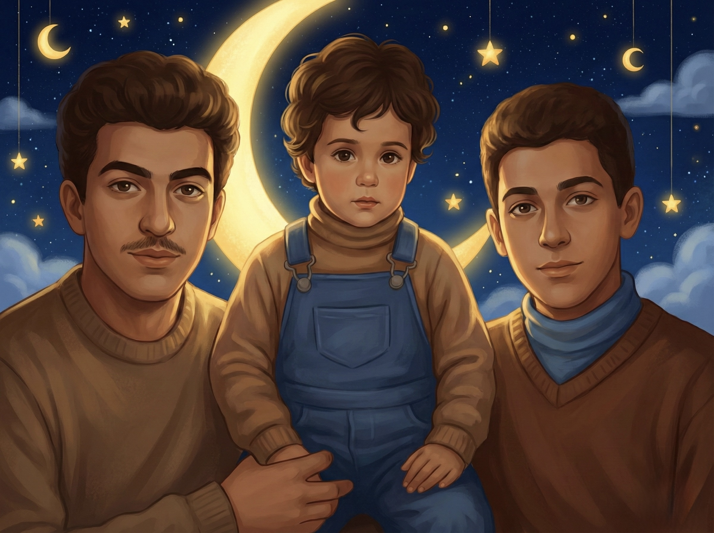

Loomi transforms traditional bedtime stories into powerful tools for building self-esteem. By weaving positive affirmations naturally into engaging narratives, children absorb confidence-building messages while drifting off to sleep. See how the same story becomes a vehicle for emotional growth with our unique affirmation infusion technology.
Regular Bedtime Story
Once there was a little fox named Mira who lived at the bottom of a tall mountain. Every day, she watched the eagles soar high above the peak and wondered what the view looked like from up there.
One morning, Mira decided to climb the mountain.
She started up the winding path, her little legs working hard with each step.
The path was steeper than she expected. Rocks slipped under her paws. The wind blew cold. After a while, Mira felt tired.
"Maybe I should go back," she thought.
But just then, she looked up and saw she was already halfway to the top. She'd come so far!
Loomi-Enhanced Story
Once there was a little fox named Mira who lived at the bottom of a tall mountain. Every day, she watched the eagles soar high above the peak and wondered what the view looked like from up there.
One morning, Mira woke up and thought, "I want to try something new today. I want to climb that mountain. Even though she'd never done it before, something inside her said she could.
She started up the winding path, her little legs working hard with each step. "I'm stronger than I thought," Mira realized as she climbed higher and higher.
The path was steeper than she expected. Rocks slipped under her paws. The wind blew cold. After a while, Mira felt tired and a little scared.
"Maybe I should go back," she thought.
But then she remembered something her mother had once told her: "When things get hard, that's when you discover what you're really made of. You can do hard things, Mira."
Other Apps
❌just another stroy app
❌high stimulation screen time
❌stories that entertain
❌soothing sounds
Loomi App
✅a developmental tool for confidence & curiosity
✅low stimulation rest and imagination time
✅stories that cultivate character
✅science-backed affirmations to build cognitive strength

Storytelling
- Builds language & imagination
- Creates bonding rituals
- Sparks creativity and wonder
Affirmations
- Grows confidence, eases anxiety
- Shapes identity with repetition
- Builds resilience & self-esteem
Deep Sleep
- Physical growth & immunity
- Cognitive development
- Emotional resilience


Our approach is supported by leading scientific journals and researchers in sleep science, neuroscience, and child development
Targeted Memory Reactivation During Sleep
Audio cues strengthen emotional memories during sleep
Sleep Promotes Emotional Memory in Children
Children excel at emotional sleep learning
Unlearning Implicit Social Biases During Sleep
Deep-seated beliefs modified through sleep cues
Self-Affirmation Activates Brain Reward Systems
Affirmations activate VMPFC and predict behavior change
The Psychology of Change: Self-Affirmation
Affirmations interrupt negative thought cycles
Self-Affirmation in Educational Settings
Meta-analysis confirms academic benefits
Bedtime Routines for Young Children
10,000+ children study validates routine consistency

Early Bedtime & Academic Performance
Early routines predict higher academic scores
Targeted Memory Reactivation During Sleep
Audio cues strengthen emotional memories during sleep
Sleep Promotes Emotional Memory in Children
Children excel at emotional sleep learning
Unlearning Implicit Social Biases During Sleep
Deep-seated beliefs modified through sleep cues
Self-Affirmation Activates Brain Reward Systems
Affirmations activate VMPFC and predict behavior change
The Psychology of Change: Self-Affirmation
Affirmations interrupt negative thought cycles
Self-Affirmation in Educational Settings
Meta-analysis confirms academic benefits
Bedtime Routines for Young Children
10,000+ children study validates routine consistency
Early Bedtime & Academic Performance
Early routines predict higher academic scores
Deep sleep supports growth & memory consolidation
Children's brains process and store information during sleep, turning daily experiences into long-term learning and development
Consistent routines signal safety and calm
Calming audio narratives activate the nervous system's relaxation response, reducing stress hormones and promoting better sleep
Rituals create predictability, trust, and easier nights
Consistent bedtime routines establish circadian cues, helping children feel secure and making sleep transitions smoother over time
 

Hover to meet the team
Founders' Story
Three Dads. One Mission.
We're three brothers & dads with daughters.
A neuroscientist, a social scientist, and a business strategist, all with backgrounds in tech, brought together by a shared question: "What if technology could nurture our kids and develop their best traits—instead of distracting and exploiting them?"
We're concerned by the rising anxiety, the shrinking attention spans, and the mounting pressures on parents to police these forces—especially on young children. So we decided to build something different.
Loomi is our deeply intentional response: Grounded in science. Designed for calm. An app that turns bedtime into a moment of emotional and psychological development—by weaving positive affirmations into bedtime stories.
Helping children internalize confidence, self-worth, and emotional resilience—right before sleep, when the brain is most open to belief-building.
We built this for our daughters. And now, we're sharing it with you.